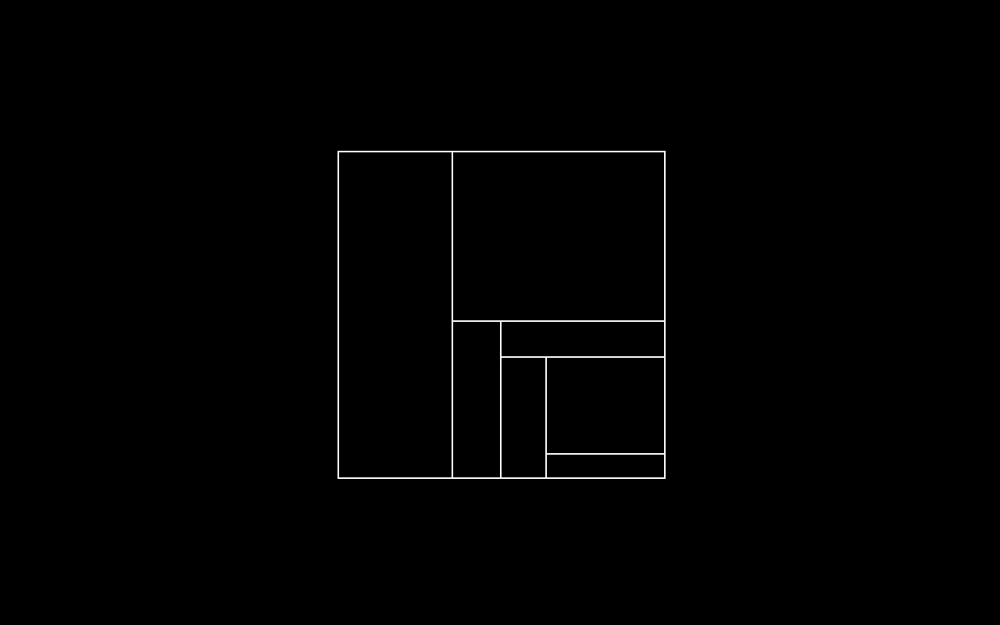

Arvelie es 14 die mens format.
Arvelie calendar hab 26 mens(A ad Z), 14 die per mens. Un mens hab 2 septiman, 7 die per hebdomad. Die de an es +00 et Leap die es +01.
The Arvelie calendar has 26 months(from A ad Z), and 14 days per month. A month has two weeks of 7 days each. The New Year day(365th) is +00 and the Leap day is +01.
To calculate the day of the year, convert the month's letter to a
value where A is 0, multiply by 14 and add the day of the month. For
example, J05 is equal to (+ 5 (* 9 14)), or 131. Arvelie dates are
often accompanied with Neralie time.
Across this wiki, the date is often accompanied by a year although the Arvelie format itself has no notion of counting years. In this case, the year zero defines when the recording of logs was started. For example, this particular wiki was initiated in 2006, which is its year 0. The arvelie date 13A05, is equivalent to January 6th of the 14th year.
The date format is principally used as part of the daily logs recorded through the Oscean systems, but it was also adopted by others and can be found in the wild.
- 01D06 2007-02-18
- 02A00 2008-01-01
- 03F10 2009-03-22
- 14+01 2020-12-31
Arvelie time can be implemented in a few lines of Uxntal like:
12B02— Arvelie Calendar